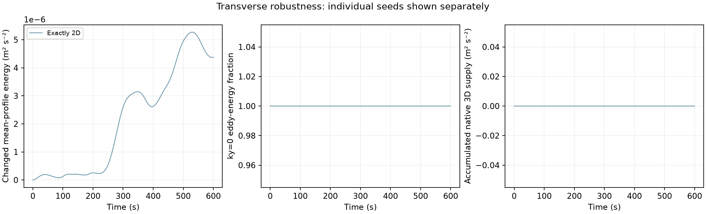

Three complementary tests: persistence under transverse perturbations, native jet-energy transfer, and a matched weak vortex-wave response.
The primary mean state is UE=−0.75us, UL=0.25us, with q0(z)=−0.75u′s(z). This is a prescribed initial vorticity profile, not an imposed constant homogenized jet vorticity.
| Run | Status | Final time |
|---|---|---|
| robust-2d-s1 | complete | 600.0 |
| robust-small3d-s1 | complete | 600.0 |
| robust-finite3d-s1 | complete | 600.0 |
| robust-2d-s2 | complete | 600.0 |
| robust-small3d-s2 | complete | 600.0 |
| robust-finite3d-s2 | complete | 600.0 |
| robust-2d-s3 | complete | 600.0 |
| robust-small3d-s3 | complete | 600.0 |
| robust-finite3d-s3 | complete | 600.0 |
| energy-matched-2d-s1 | complete | 600.0 |
| refine-2d-s1 | running | — |
| halfdt-2d-s1 | waiting | — |
| refine-finite3d-s1 | waiting | — |
| halfdt-finite3d-s1 | waiting | — |
| wide-finite3d-s1 | waiting | — |
| probe-2d-s1-minus | waiting | — |
| probe-2d-s1-plus | waiting | — |
| probe-finite3d-s1-minus | waiting | — |
| probe-finite3d-s1-plus | waiting | — |
| probe-2d-s2-minus | waiting | — |
| probe-2d-s2-plus | waiting | — |
| probe-finite3d-s2-minus | waiting | — |
| probe-finite3d-s2-plus | waiting | — |
| probe-2d-s3-minus | waiting | — |
| probe-2d-s3-plus | waiting | — |
| probe-finite3d-s3-minus | waiting | — |
| probe-finite3d-s3-plus | waiting | — |
| calibration-zero | waiting | — |
| calibration-minus | waiting | — |
| calibration-plus | waiting | — |
| calibration-half-minus | waiting | — |
| calibration-half-plus | waiting | — |
| calibration-fine-zero | waiting | — |
| calibration-fine-minus | waiting | — |
| calibration-fine-plus | waiting | — |

Matched two-dimensional / three-dimensional outcomes, by seed
A native three-dimensional contribution and two-dimensional eddy transport describe coupled parts of the same dynamics. Frequency candidates include explicit coherence and duration checks. Budget mismatches remain visible.